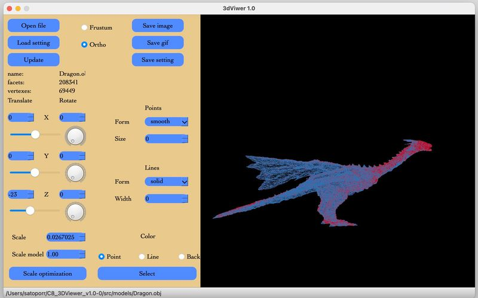

3DViewer v1.0
About
This program is designed to visualize a wireframe model in 3D(three-dimensional) space.
The program allows you to experiment with various 3D objects, setting the
desired characteristics and properties for them. The result of your work can be
saved as an image (jpeg, bmp) as well as GIF-animation.

Supported features:
- Set projection type (parallel and central);
- Customize the type of edges (solid, dotted);
- Customize the color and thickness of the edges;
- Customize the way the vertices are displayed (none, circle, square);
- Customize the color and size of the vertices;
- Move the model at a given distance relative to the X, Y, Z axes;
- Rotate the model by a given angle relative to its X, Y, Z axes;
- Scale the model by a given value;
- Save received ("rendered") images to a file in bmp and jpeg formats;
- Write small "screencasts" of the loaded object into a gif-animation;
**to save a gif-animation press "save gif" button and start moving the
object in the 3D space. After few seconds the program will automatically
ask you for saving the result.
- Work with *.obj type files.
Installation:
In the terminal in the Project directory change to the '/src' dir and run command make install.
Uninstall
In the terminal in the Project directory change to the '/src' dir and run command make uninstall.